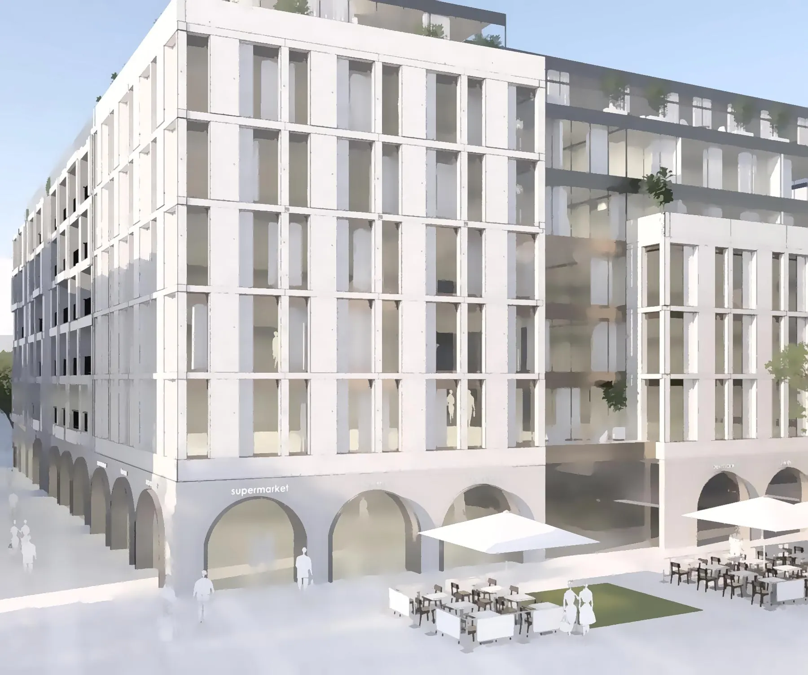
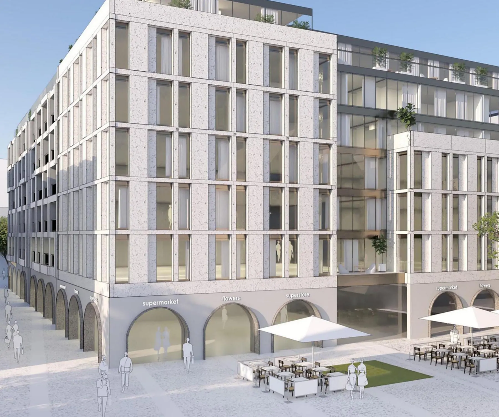

Witold Albert Kondera
Konzept und Entwurf für Handel, Büro, Wohnen und gemischt genutzte Quartiere. Für Investoren, Developer und Architekturbüros in Deutschland, Österreich und Polen.
- Idee
- Vorplanung
- Entwurf
- Visualisierung


Projekte
Eine Auswahl aus über 25 Jahren. Weitere Projekte und Studien auf Anfrage.
Orte
Projekte in 22 Städten, von Hamburg bis Bozen, von London bis Chișinău.
Schwerpunkt Deutschland, dazu Österreich und Polen als Zielmärkte der freien Tätigkeit. Mit syte.ms begleitet er Unternehmen beim Markteintritt in Polen.
Leistungen
Eigenständig in den Leistungsphasen 1 bis 5. Mit Homann Architects bis zur Generalplanung.
- 1Grundlagenermittlung
- 2Vorplanung
- 3Entwurfsplanung
- 4Genehmigungsplanung
- 5Ausführungsplanung
- 6Vorbereitung der Vergabe
- 7Mitwirkung bei der Vergabe
- 8Objektüberwachung
- 9Objektbetreuung
Konzept und Entwurf
Standortanalyse, Nutzungs- und Flächenkonzepte, Erschließung, Anlieferung, Entfluchtung und Parken, Flächenkontrolle nach gif. Neubau, Umbau, Umnutzung und Refurbishment.
Begleitung von Projektentwicklungen
Für Developer, Bauherrschaften, Architekturbüros, Fachplaner und Projektsteuerer. Vertretung der Bauherreninteressen, Behördengespräche, Präsentationen bei Kommunen. Nach Projektvertrag oder auf Stundenbasis.
Visualisierung
Renderings in verschiedenen Qualitätsstufen, vorwiegend fotorealistisch, mit kurzen Bearbeitungszeiten. 3D-Studien, Fassadenvarianten, Walk-throughs und Filme.
Partnerschaften
Homann Architects: Leistungsphasen 1 bis 8 und Generalplanung, Entwurf unter seiner künstlerischen Oberleitung. Yvonne von Salm, Architektin: Konzepte, Umbau, Neubau und Wettbewerbe.
Profil
Hohe architektonische Qualität bei einer pragmatischen, an der Bauherrschaft orientierten Haltung.
Über 25 Jahre Planung multifunktionaler Großprojekte, davon 18 Jahre in der Führung von Teams mit bis zu 15 Mitarbeitenden und in der Betreuung externer Architekten auf Seite der Bauherrschaft. Quartiersentwicklungen, Hochhäuser und Projekte mit über zwei Milliarden Euro Baukosten.
- Studium
- Architektur, Hochschule Düsseldorf, Dipl.-Ing. (FH)
- Kammer
- Architektenkammer NRW
- Sprachen
- Deutsch, Polnisch, Englisch
- Werkzeuge
- AutoCAD, SketchUp, Rhino, V-Ray, Lumion, Enscape, Revit und Archicad
Projekt besprechen
wkondera@magenta.de
+49 173 2582 541
Witold Albert Kondera
Zur Eremitenklause 37
46117 Oberhausen
Erreichbar in Düsseldorf und Oberhausen, für Projekte in Deutschland, Österreich und Polen.
Impressum
Dipl.-Ing. (FH) Architekt Witold Albert Kondera
Zur Eremitenklause 37
46117 Oberhausen
Telefon +49 173 2582 541
E-Mail wkondera@magenta.de
Berufsrechtliche Angaben
Gesetzliche Berufsbezeichnung: Architekt, verliehen in der Bundesrepublik Deutschland
Zuständige Kammer: Architektenkammer Nordrhein-Westfalen, Zollhof 1, 40221 Düsseldorf
Mitgliedsnummer: folgt
Es gelten das Baukammerngesetz NRW (BauKaG NRW) und die zugehörige Durchführungsverordnung, einsehbar auf aknw.de.
Berufshaftpflichtversicherung: Versicherer und Geltungsbereich folgen
Umsatzsteuer-Identifikationsnummer: folgt
Bildnachweis
Die gezeigten Arbeiten entstanden zum Teil in Anstellung bei den jeweils genannten Unternehmen. Rechteinhaber, Visualisierer und Fotografen werden je Projekt genannt. Nachweise folgen
Datenschutz
Diese Website setzt keine Cookies, verwendet kein Tracking und lädt keine Inhalte von Drittanbietern. Schriften und Bilder werden vom eigenen Server ausgeliefert.
Hosting
Die Website wird über GitHub Pages bereitgestellt. Beim Aufruf verarbeitet der Hoster technisch notwendige Daten wie die IP-Adresse in Server-Logfiles. Vollständige Datenschutzerklärung folgt
Kontakt
Wenn Sie per E-Mail oder Telefon Kontakt aufnehmen, werden Ihre Angaben nur zur Bearbeitung der Anfrage verwendet.